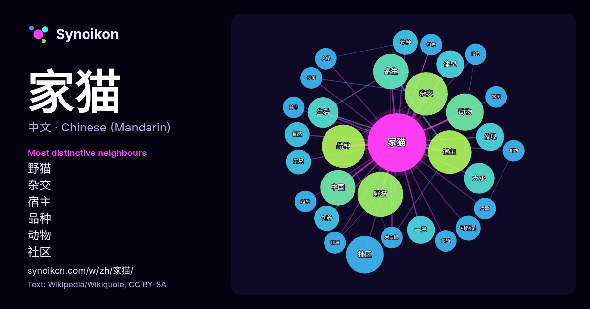

中文 · 热门词
家猫
“domestic cat” · 来自维基百科, Wikiquote 157 次出现中其周围的词。

最具特色的邻近词
- 野猫 14×
- 杂交 13×
- 宿主 13×
- 品种 13×
- 动物 9.5×
- 社区 9.4×
- 寄生 8.9×
- 大小 6.7×
- 中国 6.1×
- 体型 6.0×
- 一只 5.9×
- 生活 5.7×
- 发现 5.3×
- 饲养 5.0×
- 物种 4.9×
- 可能是 4.7×
- 自然 4.6×
- 猎豹 4.0×
- 大白鼠 4.0×
- 長尾 4.0×
× = 比维基百科普通文本中多出的倍数。
最常见的邻近词
- 野猫 13
- 品种 12
- 宿主 12
- 杂交 12
- 动物 9
- 社区 9
- 中国 8
- 寄生 8
- 大小 6
- 生活 6
- 一只 5
- 体型 5
- 发现 5
- 可能是 4
- 感染 4
- 物种 4
- 研究 4
- 自然 4
- 饲养 4
- 世界 3
上下文
- 家貓的血統已經抵達波羅的海港口和德國北部。前3世紀時，埃及農業已十分發達，當時就有養貓保護穀倉、防鼠害，而非純種家貓就是這些貓的後代。據說埃及由於將貓視為神明看待，殺貓者將被處以死刑。 家猫骨架出现在丝绸之路上大概是在公元775–940年左右，进入中国的时间应更晚。中国对确认来自中东家猫 Wikipedia snippets · 猫
- 荒漠貓（学名：Felis bieti）又稱漠貓、草猞猁、中國山貓、草猫，为猫科猫属的一种哺乳动物，是中国的特有物种。该物种的模式产地在四川康定附近。荒漠貓體形較家貓大。食性以捕食齧齒動物為主，還捕食鳥類和雉雞。 荒漠猫的体型约是家猫的两倍。冬季体色为浅黄灰色, Wikipedia snippets · 荒漠貓
- bieti）联系起来。然而全基因组研究显示，中国家猫与世界其他家猫共享相同遗传背景，并支持现代家猫源于非洲野猫（F. s. lybica）的单一起源模型；研究未发现荒漠猫参与中国家猫驯化起源的证据，但发现荒漠猫与其分布区内家猫之间存在近期基因交流。 另一方面，中国狸花猫的支持者则强调其来源于中国长期存在的本土猫群，并认为现代品种标准是对这一群体特征的整理和规范。 Wikipedia snippets · 狸花猫
- 流浪貓也稱為街貓或野貓，多為混種貓，是指一些脱离人类馴養生活的家貓以及其後代，家猫、野猫、流浪猫在一些國家或地區，被當地政府認證為入侵物種，如臺灣的中央研究院將《臺灣物種名錄》（Catalogue of Life in Taiwan, TaiCOL）中的「Felis catus Wikipedia snippets · 流浪貓
- 虎斑猫（英語：tabby cat，可簡稱「tabby」），是指在前额上有独特“M”形标记的家猫統稱，且其条纹通过眼旁，横跨脸颊，沿着背部，环绕腿和尾巴，以及按虎斑猫类型的不同，具有特征性的条纹、点状、线状、斑状、带状或漩涡状图形在其颈、肩、两侧、胁、胸和腹。 虎斑猫并非家猫 Wikipedia snippets · 虎斑猫
- 萨凡纳猫（英語：Savannah cat）， 又称热带草原猫，是薮猫（Serval）和家猫的杂交品种。 常用名称“萨凡纳猫”是一个定义不明确的市场名称，最初由少数专业猫科饲养员使用，并且倾向使用于源自野生非洲薮猫和家猫的第五子代人工杂交品种。 这种动物也被称为“薮猫混血”，“美国萨凡纳猫”。 有关薮猫 Wikipedia snippets · 萨凡纳猫
- 杰克辣条虐猫事件是指2023年4月视频平台哔哩哔哩上的美食博主“杰克辣条”偷窃家猫、拍摄并传播虐猫视频的事件。 2023年4月27日，安徽省阜南縣公安局通報有民眾稱自家饲养的奶牛猫被偷，追查到偷貓者即为杰克辣条，警方还发现其在家附近小樹林中虐猫，将猫綁在樹上，对其毆打、剪爪，用火烧死。其于4月27日 Wikipedia snippets · 杰克辣条虐猫事件
- 貓科（學名：Felidae）是哺乳纲食肉目中最具掠食性的一个科，现存种主要分为豹亚科（即“大型猫科动物”，包括獅子、老虎、豹、云豹、雪豹等）和猫亚科（即“小型或中型猫科动物”，包括家猫、猞猁、猎豹、美洲狮等）两大演化支。最早的貓科動物出現於漸新世，更被人類熟悉的家貓 Wikipedia snippets · 猫科
更多词
于 2026-10-09 以默认设置预先计算（±5 个词，中等语料）。交互式图可用实时数据刷新。
界面为机器翻译，欢迎指正。